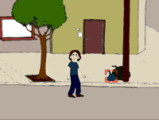

Ztylo - Diseño Gráfico
Metaxy: La Interacción es la Clave

El juego se basa en el concepto de dos mundo en convivencia (o tratando de convivir). Esto está constatado en la interacción entre el mundo real y el del videojuego.
En cuanto al objetivo, existe un concepto de “entrar” en el juego para poder “salir”. Esto se desarrolla con la idea de querer ayudar a ese personaje a “escapar” de la ciudad que lo aprisiona, descubriendo que más allá de la ciudad, no existe nada, solo el código de programación del videojuego.
Concepto de Meta-Juego. Se busca llevar al usuario a lo mas profundo del videojuego, brindándole datos del mismo, desde concepciones básicas, hasta la programación mas interna.
Nos ayudamos de la antigua definición de la palabra "Metaxy" la cual además da nombre al juego. Se refiere a un término para designar a “aquello que está en el centro”. Actualmente, se le da a la palabra “Metaxy” otra definición, ubicándola como aquel lugar permanente donde se encuentra el hombre, entre los dos polos de la existencia.
El juego le propone al usuario la tarea de llevar adelante a un personaje por medio de su habilidad y estrategia, con la diferencia de que este mismo personaje, además de responder a los pedidos del jugador, tiene reacciones propias que pueden ayudar, así como empeorar la situación. Esta combinación de dos “mundos”, brinda una estrategia que puede ser la clave para concretar las dificultades.
Este personaje interactúa de forma consciente con el usuario, manipulando la situación por medio de diálogos, pensamientos y hasta acciones concretas. A medida que se avanza en el juego, la personalidad del personaje se hace mas fuerte, desobedeciendo desde órdenes simples, hasta complejas situaciones anímicas, a tal punto de “auto-controlarse" por su cuenta y realizar acciones mientras uno no está jugando.
El usuario que se encuentre jugando, por medio de una interfaz, puede “darle órdenes” al personaje, que en cierta forma se vuelven “sugerencias” para este último.
 Existe un anclaje con la obra de Bioy Casares, La Invención de Morel. Al igual que en el relato, existe esta interacción entre dos mundos distintos (o un mundo dentro de otro, como puede ser el proyectual y el real). El mundo proyectual ignora las situaciones que se producen en el mundo real, provocando la vacilación y el asombro. Lo mismo sucede en la interacción entre el videojuego y la realidad. Además de esto, hay una fuerte presencia de los personajes secundarios con acciones completamente repetitivas y la existencia de un individuo que vive estas repeticiones. A base de esos personajes cíclicos, el personaje principal busca muchas teorías absurdas para tratar de explicar lo que sucede, hasta que descubre lo que ocurre en verdad (concepto de vacilación y la busqueda de hipótesis imposibles, ambas extraídas del cuento).
Como ultimo concepto, y para establecer la relación metafísica, está muy presente la idea de "entrar" para "salir". Relación profunda con el relato, en el que se debe "morir" para poder "vivir".
"None": Protagonista del juego. Se mueve de forma antropomórfica, sin ninguna habilidad sobrehumana. Tiene reacciones anímicas muy fuertes. Solo le interesa salir del videojuego, sin importar donde termine. Siempre está jugando, así que por más que el jugador no esté presente, None sigue jugando, consiguiendo objetos y avanzando.
Resto de la población del Juego: Los personajes que componen el juego. Se mueven limitadamente de manera antropomórfica. No pueden ser controlados por el usuario jugador. Tienen estéticas diferentes entre sí. Son odiosos para None ya que sus diálogos son repetitivos y carentes de todo sentido. En cierta forma se comportan como objetos (objetos de videojuego, que es lo que None descubre al final). Unos pocos saben, como None, que el usuario está manejando el juego. Lo hacen presente a través de frases como “Alguien nos observa” o “Somos como marionetas, por lo menos usted”.